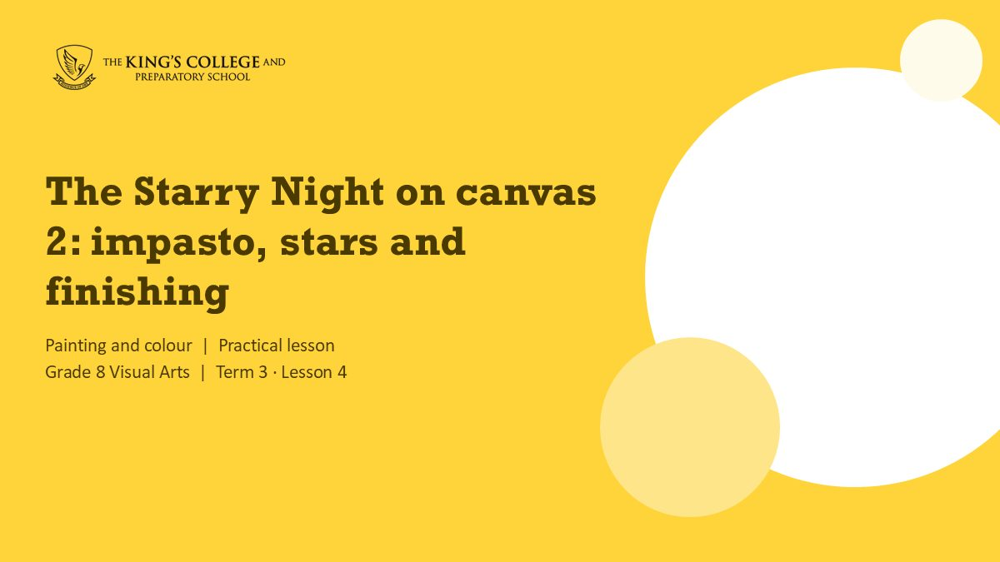

Term 3 · Lesson 4 · Practical lesson
The Starry Night on Canvas 2: Impasto, Stars and Finishing
Start Here
Today I Will
- Today I will paint the sky in directional strokes over my first layer
- Today I will add impasto stars and a moon
- Today I will finish, sign and present my canvas
Which part of The Starry Night would you touch first if you could, and why?
Words to Know
| Word | Meaning |
|---|---|
| Brushstroke | The mark left by one movement of a loaded brush. |
| Impasto | Paint applied so thickly that the brushstrokes stand up from the surface. |
| Expressive colour | Colour chosen to show feeling and energy rather than exactly what the eye sees. |
| Blocking in | Painting the main shapes and areas of colour quickly, without detail, as a first layer. |
| Directional mark | A stroke that follows a direction and leads the eye, such as around a swirl. |
Slides

Videos
Notes
Building the sky in directional strokes over the first layer; thick impasto stars and moon; the cypress and the village; finishing, signing and presenting the canvas.
From Block-in to Brushstrokes
- Choose the detail: Move the viewfinder over the print; mark quarters lightly on the print and the board to place shapes.
- Light outline: Draw only the main shapes very lightly in HB: paint will cover it.
- Block in: Thin paint, big flat brush, darkest blues and the cypress first, until no white board shows.
- Strokes on top: Short directional strokes side by side, middle then pale blues, without blending them away.
- Impasto last: Thick yellow on the stars and moon so they stand up.
Mixing the Night
| Blues | Yellows |
|---|---|
| Deep blue: blue + a touch of black | Bright yellow straight from the tube |
| Middle blue: blue + a little white | Pale yellow: yellow + white |
| Pale blue: white + a little blue | Warm yellow: yellow + a touch of red |
Finish with the light: the stars go on last and thickest.
Practical
You need: A5 canvas board, Starry Night print, viewfinder, HB pencil, acrylics, flat and round brushes, palette knife, palette, water pot, paper towel
The Starry Night on Canvas 2: Impasto, Stars and Finishing
- Mix your blues and yellows again, matching last lesson.
- Paint short directional strokes over the sky: swirls in the middle, dashes around the stars.
- Paint the cypress in upward, flame-like strokes.
- Add thick impasto yellow on the stars and the moon with a knife or a full brush.
- Step back, then add the village details and a few highlights.
- Sign the back and hand in the canvas.
Assessed (Term 3 practical, 40 marks): The Starry Night on A4 canvas, collected at the end of the lesson (finish in the extra lesson if needed). Marked with the simple the starry night on a4 canvas rubric (8 lines x 5 = 40).
Test Yourself
- What is impasto?
- Why should the strokes stay visible?
- Which way do the strokes go in the cypress?
Show answers
1. Paint so thick that the strokes stand up from the surface. 2. They show the movement and energy, as in Van Gogh's painting. 3. Upward, like flames.
Finished Early?
Practise one star.
- On scrap card, paint a dark blue square.
- Paint rings of strokes around a centre.
- Add a thick yellow centre with a knife.
- Compare it with Van Gogh's stars.